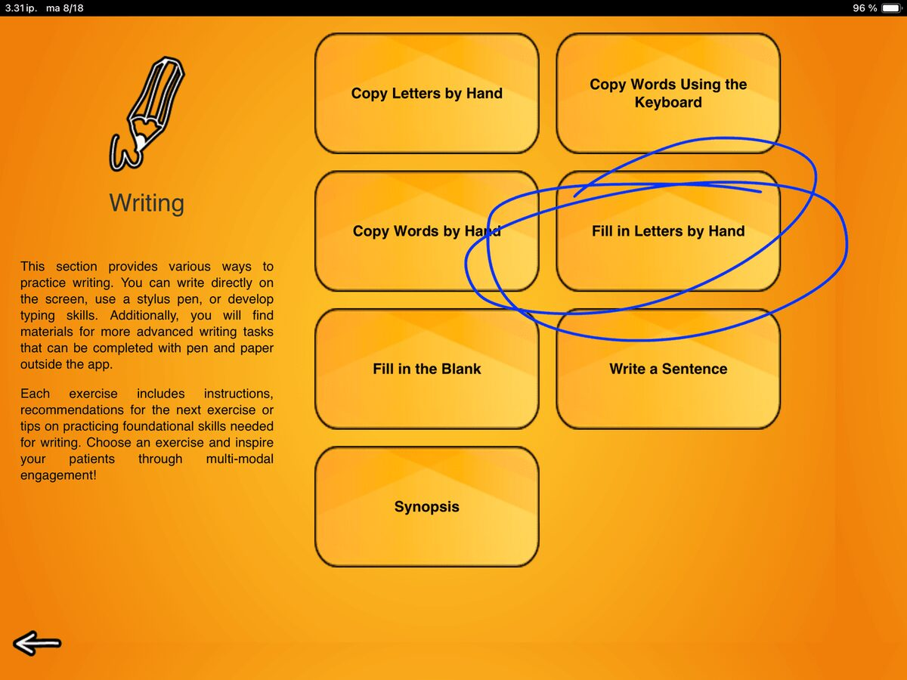
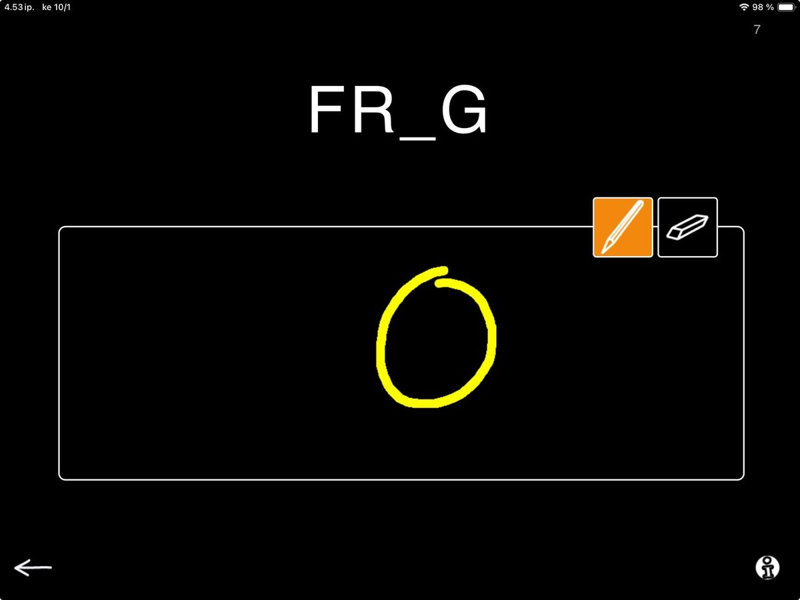
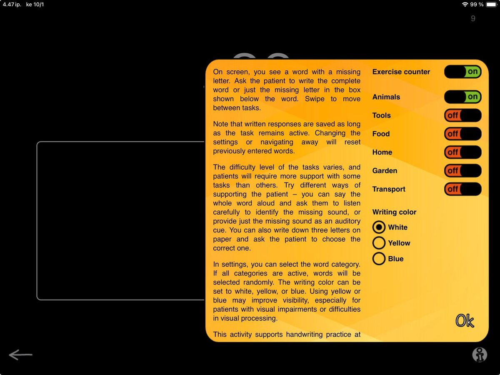
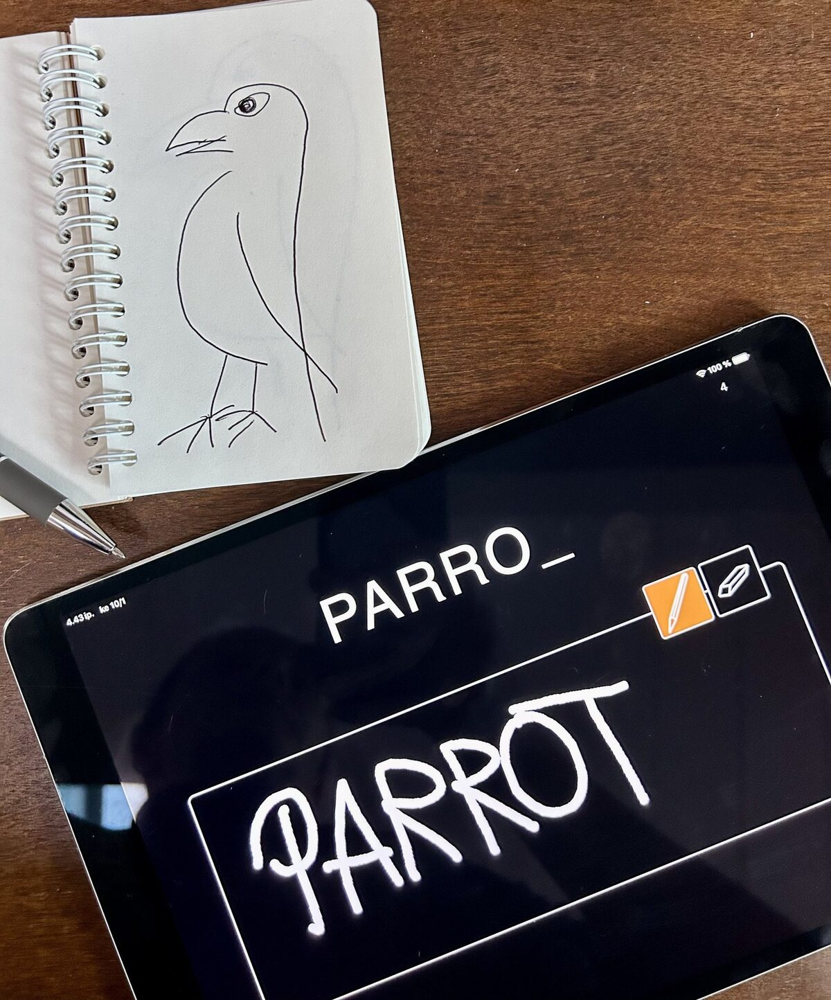

The third exercise in our Writing category is Fill in Letters by Hand. If this looks familiar, you are not seeing double. This task is an extension of Copy Words by Hand where patients copy complete words they see on screen.
This exercise supports writing and reading skills on multiple levels. Alongside the motor skills needed for writing and sound–letter correspondence, patients strengthen visual word recognition, technical reading, and language-based reasoning, all in one engaging and simple task.

When you launch Fill in Letters by Hand, you see a word that is missing a letter. Below the word, there is an empty box. Instruct your patient to write either the missing letter or the whole word into the box using their finger or a stylus pen. I often encourage patients to write the whole word and read it aloud to me as well. The more work and opportunities to interact, the better, right!?
As you move through the words, you will notice that some are trickier than others. Patients may need more support for certain words (P_LARBEA_) compared to others (_IGER). Get creative with your cues to find a style that works best:
Show the whole word on paper, identify the missing letters together (then hide the word)
Say the word aloud or sound it out so they can match the sounds to letters
Offer a visual cue with three letters to choose from
The flexibility of SanapsisPro makes it easy to mix and match these ideas. You can even skip or redo tasks with a simple swipe. You are in control.

The difficulty level of the task can be fine-tuned with categories. Selecting words from just one category adds a semantic priming effect that makes the task easier. For example, figuring out that (P_LARBEA_) needs an O and an R is much easier if you know you are looking for an animal, especially if you have just worked on GIRAF_E, Z_BRA, and BEA_. These categories align with many other exercises, giving you fresh ways to use the same material across different tasks.
You can also experiment with different colors to write with. Switching to blue or bright yellow can sometimes make a big difference, especially if the patient is working with visual limitations or deficits.
As in the other writing exercises, I am quite sure nobody minds if you decide to invite patients to write the word on paper with a traditional pen as well! After all, the end goal is to be work outside the app, right?
We hope you enjoy working with Fill in Letters by Hand, and would love to hear your thoughts on the task.
Fun fact of the day: Sometimes I like to reward my patients by drawing a picture of the animal or object in question while they work on their writing, so we can compare who did better. They usually win.
